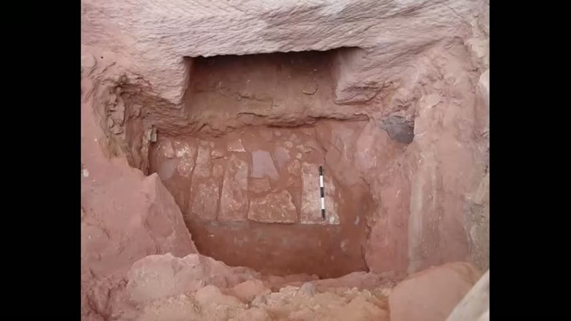

Curious Being
Petra's Treasury Bombshell: What They Just Found Underground Rewrites Its Entire History
Tina · 23 min · watch on YouTube · summarised 2026-08-23
In October 2024 the Discovery Channel's Expedition Unknown aired a two-part episode on a Petra tomb holding 12 human skeletons, billed as perhaps the most significant tomb ever found at the site 00:26–01:09. Her opening point is that this was not news: excavations in 2003 and 2005 had already recovered over a dozen human remains and funerary goods from these tombs, tomb 62C beneath the Treasury among them. Some have questioned whether the programme's discovery was staged.
What she argues the coverage missed is in the published reports, and in a survey nobody led with.
Why Petra is buried
Only 15–20% of Petra has been excavated 01:58–02:20. The rest is underground, and the reason is flash floods 02:20–03:32.
Petra sits in desert subject to sudden severe flash floods every few years. Against them it had a sophisticated rock-cut water system — channels, dams, cisterns and conduits — that both supplied water and diverted floods away from the carved city. A dam at the entrance to the Siq blocked floodwater, which was routed instead down Wadi Muthlim, the Little Siq.
Her inference: with the dam intact and the Little Siq maintained, little or no flood would come down the Siq, and the tombs under the Treasury and along the Street of Facades would not have been buried. That metres of sediment did bury them means the water system failed a very long time ago.
Which sets up the question the video is actually about: when did it fail? Date the sediment and you date the failure.
The excavation reports
What the reports say 05:39–07:20:
- Five rock-cut caves along and under the Treasury's platform — 62A to 62E — with two more buried tombs on the eastern cliff opposite. The paper she quotes states that tomb 62A sits 7 m below the courtyard surface, "which indicated that the tombs beneath al-Khazna were arranged across two levels".
- The four tombs in front of the Treasury sit about 6 m / 19.7 ft below today's surface. Tomb 62A, on the far right, is 7 m / 23 ft down; tomb 64A opposite is also 7 m down, so they likely date together.
- Every tomb entrance is under the buried Roman-era courtyard.
- 62A is deemed the oldest on pottery style, 1st century BC.
- The tombs contain thick flood sediment despite having been blocked with stone in antiquity. Bones and pottery in those layers date to the Nabataean period, roughly 100 BC to 100 CE — the peak of the kingdom, before Rome annexed Petra in 106 CE.
- Researchers propose the tombs slightly predate the Treasury, and that the tombs, the Treasury, the Urn Tomb, the Royal Tombs and the Monastery were all completed within 40 years, during the reign of Aretas IV.
Petra's population peaked at an estimated 20,000.
The arithmetic
This is the core of the video, and it is arithmetic anyone can redo 12:25–14:05.
Two sediment layers are recorded at the Treasury plaza, divided by the Roman limestone courtyard:
| layer | thickness |
|---|---|
| above the Roman courtyard | 3.5–4.5 m |
| below the Roman courtyard | 1.5–2.5 m |
The Romans annexed Petra in 106 CE and paved the Siq and the courtyard early, so the courtyard is a timestamp. The upper layer therefore represents about 1,900 years of accumulation, to the 2005 excavation — a rate of 1.84 to 2.37 mm a year, under a tenth of an inch.
Apply that rate downward and the 1.5–2.5 m below the courtyard would need 630 to 1,360 years. But the Nabataeans only reached Petra in the 4th century BC, leaving about 500 years. In her phrasing: within 500 years the plaza gathered what should have taken a thousand.

The deposit the whole dating argument is measured in, in a trench against a scale.
The second anomaly
Limestone fragments were found in the lowest and earliest sediment stratum inside tomb 62A, and the same in 64A [09:07–09:21, 14:05–14:32].
Petra is red sandstone. Limestone is foreign, brought in by the Romans to pave the Siq and the Treasury courtyard. So Roman-era material sits at the bottom of the sediment inside a tomb dated to the 1st century BC.
She adds a detail from the reports that matters later: the Roman courtyard lies 1.5–2.5 m above the tomb entrances, which means that when the Romans arrived there was already over 2 m of sediment covering the tombs' lower parts. It was hard and compacted, so rather than clear it they added steps down to the lower caves, levelled what was there, and paved on top.
The maintenance argument
Her reading of that 10:13–11:28: if the Nabataeans built the monuments, the dams and the drainage, they had the knowledge to maintain them — and there should not have been two metres of sediment blocking their own noblemen's tombs at the height of the kingdom. Nor, if the Treasury was carved within forty years of the tombs, would they have failed to notice the flooding, or chosen to carve their most important monument in a place with a known flood problem.
She also declines a possible counter: the terracotta drainage pipes in the Petra Museum do not show that the Nabataeans cut the rock water system, since water first came through rock-cut channels and the pipes came later — possibly Roman work, given that Rome used terracotta drainage extensively from the 2nd century BC to the 2nd century CE.
And she cites Diodorus Siculus, 1st century BC, who wrote that the Nabataeans had no permanent houses and lived in the open air.
What the 2024 survey found
The finding she says should have been the headline 14:32–15:48.
An electrical resistivity tomography (ERT) survey run inside the excavated tombs 62D and E found another row of caves below them, with essentially identical geophysical signatures to the five Treasury-side tombs. The deeper caves protrude further out from the cliff than the ones above.
She had predicted this. In her 2022 video on the tombs under the Treasury she proposed that another row of structures might lie beneath the Treasury's facade. The excavation paper she quotes earlier had already inferred two levels from the depth of tomb 62A, so the idea was not hers alone; what the survey added was geophysical evidence for it.

The 2024 geophysical result, shown as the paper presents it - which is a map of the surface, not a section through it.
The paper's own discussion is cautious: the figure "could indicate the presence of other structures on the sides and in front of the monument and an internal clearing to them."
Her reading of the resistivity image goes further, and she flags that it does 15:48–17:34. ERT can distinguish air-filled voids (very high resistivity, red here), solid bedrock (moderate, green and yellow) and sediment-filled voids (low, white — wet silt or saturated soil). The paper did not specify which, "so I have to make an educated guess." Hers: more cave structures stood in the middle of the plaza within the natural sandstone, dividing it in two — a smaller area at the Treasury and another linking to the Siq, joined by a narrow rock gate, with the outer part acting as flood control.
She notes the ERT reached only about 6 m / 20 ft down.
How the lower row explains both anomalies
The payoff 17:48–20:10, and it is economical.
If there was a row of caves below, then tombs 62A–E were originally much higher on the cliff, with the lower caves stepping out in front of them — the arrangement visible today along the Street of Facades. When they were cut, those lower cliffs were exposed and unburied.
- Why Roman limestone sits at the bottom of a 1st-century-BC tomb. Early floods, after the water system failed, could not reach tombs that high. Only once sediment had built up enough — around the time of the Roman annexation — did floodwater start entering them, carrying with it broken limestone from the Romans' own damaged paving on the Siq. So the first material to wash in is Roman, in a tomb far older than Rome.
- Why the lower sediment accumulated too fast. The open plaza used to be much smaller, divided by rock forms now gone. The same volume of debris spread over half the floor area piles up twice as high.
She closes on a frustration from the reports: the 2005 team said they were confident there are more features at the same level as tomb 62A, but would not excavate them, in order to preserve the lower Roman courtyard.
What you can check yourself
- The sediment arithmetic is the whole argument and it is arithmetic. Thicknesses above and below the courtyard, an anchor date of 106 CE, and a division. Anyone can redo it.
- The excavation reports are published — 2003 and 2005 — and every figure she uses is in them: depths, tomb numbers, pottery dates, the position of the courtyard relative to the entrances.
- The Roman limestone in the lowest stratum is a stratigraphic observation in a published report, not an inference.
- Limestone being foreign to Petra is basic local geology.
- The ERT survey is a published 2024 result, and the resistivity figure is reproduced.
- Her 2022 prediction is on the record, dated and public, and can be compared against the survey that followed.
- That only 15–20% of Petra is excavated is a standard figure.
- The Street of Facades shows the stepped arrangement of upper and lower rows that her explanation relies on, and it is visible on site today.
What the video does not settle
- Sediment does not accumulate at a constant rate, and her own explanation says so. The whole back-dating depends on applying a 1,900-year average to an earlier period — and her resolution of the anomaly is that the plaza was smaller then, so the rate was higher. Both cannot be load- bearing. Flash-flood deposition is episodic and depends on catchment condition, upstream supply and whether the dams were standing; a mean rate is the wrong instrument for the question.
- Her own answer removes the need for the conclusion she draws. If a smaller plaza deposits twice as fast, the 630–1,360 year figure collapses to something the Nabataean period can accommodate, and the anomaly is explained by geometry rather than by anyone else building Petra. The video reaches the geometric explanation and does not revisit the argument it was raised against.
- "They did not maintain it, so they did not build it" does not follow. Infrastructure decays when priorities, revenue or control change, and the video's own timeline has the sediment reaching the tombs at almost exactly the moment Rome annexed the city and the trade routes shifted. That is a conventional explanation for a maintenance collapse, and it is not considered.
- Diodorus is being used across the wrong centuries. A 1st-century-BC description of Nabataeans as tent-dwellers describes an earlier, more nomadic phase of a people whose monumental phase is dated to the following century. Cultures change; the quotation does not reach the claim.
- The image shown is not a section, and the row of caves cannot be seen in it. The ERT graphic she displays is a plan view of resistivity laid over an aerial photograph of the plaza, with a log-resistivity scale. It shows patches of high and low resistivity across a surface; it does not show anything stacked beneath anything. The claim that there is a lower row rests on the paper's wording and on her reading, not on the picture.
- The ERT interpretation is her own and she says so. The paper declined to distinguish air-filled from sediment-filled voids; she assigns readings to the colours and builds a two-part plaza with a flood-control function from it. That is a hypothesis drawn from an image whose authors would not draw it.
- The 20,000 population point is rhetorical. Whether that many people could carve the monuments in forty years is a real question and no estimate of labour, rates or person-hours is offered on either side.
- The machine-marks claim is carried over. That Petra's largest monuments show machine-like uniform markings while Hegra's show hand tools is asserted from a prior video and is not demonstrated here.
See also
- Petra: More Ancient than Assumed? — the earlier video this one builds on, where the Petra and Hegra comparison is made in full.
- Petra tool marks — the marks themselves, examined rather than referenced.
- The Osireion Mystery — the same argument shape at a different site: a water system too sophisticated for the people credited with it.
What we have not checked
- The 2003 and 2005 excavation reports have not been located or read. Every figure — tomb numbers and depths, sediment thicknesses, pottery dates, the position of the Roman courtyard, the refusal to excavate further — is as she reports them.
- The 2024 ERT paper is not named and has not been read. The survey's conclusion is quoted from screen and the resistivity figure is known here only from her screenshot.
- Her own 2022 video has not been reviewed, so the prediction is verified here only by her account of it. It is public and dated, and confirming it is a matter of watching that video.
- The claim that the Expedition Unknown episode may have been staged is attributed to unnamed "some" and has not been checked; nor has the expert reaction she reports.
- The figures are as stated and have not been traced: 39–40 m for the Treasury, 15–20% excavated, 1.84–2.37 mm a year, 630–1,360 years, 20,000 population, the 40-year construction window and the reign of Aretas IV.
- Diodorus Siculus's description of the Nabataeans is quoted from screen without a citation.
- Whether terracotta pipes at Petra are Roman rather than Nabataean is offered as a possibility and has not been checked.